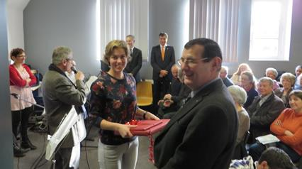

Hoewel we, zoals
elk jaar overigens, straks weer geconfronteerd zullen worden
met de – uiteraard weer eens naar boven – aangepaste
post-tarieven, blijft uw ledenbijdrage voor 2014 ongewijzigd.
Ze beloopt voor het in mei te verschijnen nieuwe Jaarboek
De Nederlanden ‘extra muros’ en
voor de driemaandelijkse Nieuwsbrief Zannekin
29 €. Vanaf 35 € wordt u met dank als steunend lid geboekt.
Maakt u bij
voorkeur gebruik van ons ‘Belgische’ zogenaamd ‘Europees’
rekeningnummer, waarvan de rekeningoverzichten ons dagelijks
meegedeeld worden. Leden genieten bovendien ook een tastbare
vermindering op de deelnamekosten van de Zannekin-activiteiten.
Herdruk ‘Nieuw Oud Vlaams’ van Cyriel
Moeyaert
Samen met het
jaarboek De Nederlanden ‘extra muros’
konden we in 2011 al onze leden een exemplaar aanbieden
van de eerste druk van deze uitgave, die nieuwe lemma’s bracht
bij het Woordenboek van
het Frans-Vlaams van deze auteur.

Deze eerste oplage
was binnen de kortste tijd uitverkocht, zodat Cyriel Moeyaert
besloot tot een tweede ongewijzigde druk. De genaaide uitgave
telt 96 p. in het formaat van onze jaarboekenreeks.
Geïnteresseerden kunnen een exemplaar van deze tweede druk
aanschaffen via ZANNEKIN. Daartoe volstaat het 12,50 € over te
boeken op een ZANNEKIN-rekening), met de vermelding’ Nieuw Oud
Vlaams’. De verzendkosten zijn inclusief.
Zannekinfeest te Rexpoede in Frans-Vlaanderen

In onze vorige
Nieuwsbrief maakten we
u opmerkzaam op het aangekondigde
‘Vlaams Feest’ te
Rexpoede, waarbij o.a. een nieuwe reus, met de naam
ZANNEKIN nog wel, zijn
intrede deed
De krant ‘Le Journal des Flandres’
van 28 augustus bracht daarover bijgaand verslag
Een
bestandsopname anno 1940
Het laatste
stuk dat vóór de [Tweede Wereld]oorlog verscheen over dit
onderwerp was wellicht het hoofdartikel in het maart-nummer
[1940] van het maandschrift Gudrun.
Hier volgt een artikel met enkele nadere inlichtingen die
ons van bevoegde zijde werden toegezonden.
De inwoners van dit deel van de Nederlanden waren
vóór hun aanhechting aan Frankrijk (in de tweede helft van de
17e eeuw) Dietsers uit één stuk. Hoewel hun streek zeer dicht
bij het machtige Frankrijk gelegen was, scheen de Franse taal
niet veel bekoring te hebben voor de stoere Vlamingen uit de
Westhoek. In de 16e eeuw waren er b.v. in Duinkerke, de
hoofdplaats van de Westhoek, maar weinig mensen die Frans
kenden; en bestonden daar wel vier rederijkerskamers.
De Vlamingen wisten wel dat het machtige Frankrijk
hun steden beloerde, en zij voelden zich Nederlanders met hart
en ziel. Michiel de Swaen, de grootste van hun dichters,
roemde zijn land in een gedicht aan keizer Karel V:
O
Prins! Dat Nederland zo roem en zegenrijk,
Het schoonste en beste deel van gheel
het Spaensche rijck
De bloeme van Euroop, den pronk van alle
landen…
Wat moeten de gevoelens geweest zijn van de
bevolking, toen de Westhoek bij Frankrijk werd ingelijfd onder
Lodewijk XIV!
Er zijn geen bewijzen voorhanden dat het volk zich
gewapenderhand verzet heeft tegen deze inlijving, zoals de
Bretoenen dat zouden doen wanneer zij op hun beurt in 1790
geheel door Frankrijk ingepalmd werden. Neen, van een
boerenopstand zoals bij de Bretoenen, hebben wij niets
gehoord, maar taai bleef de Vlaamse bevolking haar aard en
taal getrouw. Fransen wilden zij in geen geval worden, en ze
zijn het ook tot heden toe niet, hoewel zij officieel
natuurlijk zo aangeduid worden, evenals de Elzassers, Basken,
Bretoenen, enz.
Tot aan de Franse omwenteling werd de moedertaal
tamelijk met rust gelaten. Frankrijk drong toch zijn taal als
enige officiële taal, b.v. in Duinkerke op. Tijdens de
omwenteling echter werden overal Franse onderwijzers
aangesteld. Zij moesten er voor zorgen dat de moedertaal uit
de scholen gebannen werd. Zo werd bij de Vlamingen de
glorierijke Republiek met de mooie leuze: ‘vrijheid,
broederschap, gelijkheid’ ingeluid door de onderdrukking van
hun moedertaal.
Toch verschijn het Nederlands stilaan terug in de
scholen: de onderwijzers gaven naast het Frans nog enkele uren
Nederlands onderricht, tot dat in 1853 ook dat verboden werd.
Uitzondering werd nog gemaakt voor de catechismus. De kinderen
hadden een tweetalig tekstboek. Doch in de jaren tachtig, toen
de godsdienst uit de scholen werd gebannen, verdween ook dat
laatste overblijfsel van Nederlands onderwijs.
Tot de eer van de geestelijkheid moet gezegd worden
dat zij met hand en tand voor de handhaving van de eigen taal
en zeden hebben gestreden. Zij gingen voort met
catechismusonderricht, met prediken in het Nederlands. In al
hun betrekkingen met het volk spraken zij hun eigen taal. Geen
drukking, noch van wereldlijke, noch van geestelijke overheid,
kon hen ertoe brengen verraad te plegen jegens hun volk. Het
hoogste kerkelijk gezag trok de genomen maatregelen in – en
dit was te danken aan de fiere vastberaden houding van het
merendeel van de priesters.
Zo hebben daar hoofdzakelijk de priesters en de
onderwijzers zich verzet tegen de verfransing, systematisch
doorgevoerd van officiële zijde. De kamers van retorica, welke
zeer bloeiend waren tot aan de Franse omwenteling, droegen ook
veel bij tot het behoud en het verspreiden van de moedertaal.
De taal bleef dus bewaard, doch daar zij grotendeels
een gesproken taal bleef, en steeds minder Vlamingen hun taal
konden lezen en schrijven, is het de taal gebleven van de 18e
eeuw. Zij is niet gemoderniseerd zoals in Noord- en
Zuid-Nederland, maar heeft haar eigen wezen zuiver bewaard.
Evenwel is het voor de meeste Frans-Vlamingen moeilijk vlot
algemeen Nederlands te lezen. Feitelijk zijn zij (de
gestudeerden uitgezonderd) van alle hogere ontwikkeling in
eigen taal verstoken.
In latere jaren zagen enkele Vlaamse tijdschriften
het licht. De
Vlaamsche Stemme in Vrankrijk verscheen
kort na de [Eerste] Wereldoorlog. Later kregen ze Le
Lion de Flandre en De
Torrewachter, welke bladen steeds
degelijker werden, totdat ze samen in één band verschenen en
tot een zeer lezenswaardige uitgave zijn uitgegroeid, niet
enkel voor de Frans-Vlamingen, maar ook voor alle
Nederlanders. De Tisje-Tasje almanak bestond
ook al voor de oorlog en is daarna ook tot leven teruggekeerd.
Zijn daar nooit pogingen aangewend om al de
Dietsgezinden te groeperen? Toch wel. E het zijn weer vooral
de priesters die de stoot gegeven hebben, en zelf jarenlang
hun beste krachten aan de beweging hebben gewijd. We noemen
hier enkel prof. Dr. Kanunnik C. Looten, die steeds de ziel is
geweest van het ‘Comité Flamand de France’.
In de seminaries van het bisdom Rijsel wordt de
Nederlandse taal onderwezen, zodat de priesters niet met een
vreemde taal tot het volk moeten gaan. Daar zet de
geestelijkheid in dat de godsdienstige waarheden diepst in
hart en ziel van het volk doordringen wanneer men die
verkondigt in zijn eigen taal. In Brussel schijnen de zielen
van de Dietsers helaas niet zoveel waard te zijn.
Ook bestaat bij de Faculteit van Wijsbegeerte en
Letteren aan de Katholieke Hogeschool te Rijsel een leerstoel
voor de Nederlandse Taal- en Letterkunde – de enige in
Frankrijk! Avond-leergangen in de Nederlandse taal worden
ingericht in de Handels- en Nijverheidsschool (een stichting
van de Kamer voor Koophandel) te Toerkonje (Tourcoing). In
dezelfde stad zorgt de Nederlandse Sectie van de ‘Cercle
Polyglotte’ voor cursussen in onze taal. De ‘Vlaamse
Vriendenkring’ van Robeke (Roubaix) heeft ook van zijn kant
zulk een initiatief genomen.
In de laatste jaren is vooral het ‘Vlaams Verbond
van Frankrijk’ zeer actief opgetreden. Het belegt congressen,
het schrijft prijskampen uit over Taal- en Letterkunde,
Geschiedenis en Folklore. Het ‘Davidsfonds’, dat reeds lange
jaren in de Westhoek is ingeburgerd, geeft ook jaarlijks een
prijs, evenals het ‘Algemeen Nederlands Verbond’. Zo worden de
Dietsgezinden aangemoedigd om Nederlands te leren, te
schrijven en te spreken.
Sedert jaren heeft er contact bestaan tussen
Frans-Vlamingen en andere Nederlanders, maar die betrekkingen
moeten ononderbroken en systematisch worden doorgevoerd. We
kennen ginder nationale werkers, die gans op Diets standpunt
staan en dag en nacht ijveren om hun gedachten ingang te doen
vinden. Maar zij stuiten op grote moeilijkheden. Parijs doet
steeds zijn best, en dat is heel wat, om zijn minderheden taal
en eigen volksleven te ontnemen. Het slaagt er gewoonlijk in
de vreemde volksstreken minstens een Frans uitzicht te geven.
De Frans-Vlamingen te helpen weer zich zelf te worden is mede
de taak van Noord- en Zuid-Nederlanders. Het moet uit zijn met
de echt liberale mentaliteit eigen volksgenoten aan hun lot
over te laten van zo gauw een vreemde staat er zich meester
van heeft gemaakt.
____________
Bron: Volk en
Staat, 23 juni 1940, p. 3.
Toelichting: dit verhaal is straks driekwart eeuw oud en tussen
toen en nu blijkt er een merkwaardige continuïteit te bestaan.
Alleen dienen er persoonsnamen en tijdschrifttitels vandaag
anders ingevuld te worden; de bestrevingen blijven
ongewijzigd: een Nederlandse toekomstdroom voor de Nederlanden
in Frankrijk naderbij brengen.
Belgier gehen in Wittenberg auf Spurensuche
Rainer Schulz
WITTENBERG/MZ/RS -
Bereits zum vierten und letzten Mal in diesem Jahr 2013 ging
Leo Camerlynck mit Studenten der Seniorenuniversität Hasselt
(Belgien) in Wittenberg auf Spurensuche. Zielgerichtet macht
der Brüsseler Historiker seine Landsleute bekannt mit den
historischen Wurzeln der Flamen, die bis nach Danzig und sogar
Russland führen.
Schon seit vielen
Jahren verfolgt Camerlynck die Spuren der Flamen, sei es in
Südafrika, Frankreich, Polen oder Russland. Eine wichtige Spur
führt dabei in den Fläming. "Der Verein Fläming-Flandern in
Witten-berg ist bei allen meinen Forschungen ein wichtiges
Bindeglied. Hier er-halte ich gute fachliche Hinweise und
organisatorische Unter-stützung", sagt Camerlynck, der mit
knapp 200 Studenten, die allein in diesem Jahr jeweils zwei
Tage in Wittenberg weilten, dafür sorgt, dass Belgien gleich
nach den USA an zweiter Stelle der ausländischen
Besucherstatistik in der Lutherstadt stehen dürfte.
"Ich glaube, unsere
Studenten haben inzwischen ein Faible für Wit-tenberg
entwickelt. Vielleicht liegt es an den flandrischen Wurzeln",
sagt der Belgier und verweist lächelnd auf Gemeinsamkeiten wie
Bier und das gute Essen.
Viele der Studenten -
das Durchschnittsalter liegt übrigèns bei 67 Jahren - waren
das erste Mal im Osten Deutschlands. Sie seien erstaunt über
den guten Zustand solcher Städte wie Wittenberg. Die Altstadt
und die offenen Bäche haben es vielen angetan. Aber auch
Fragen zur früher dominierenden Chemieindustrie gab es oder
zum Christentum in der DDR.
"Für uns war auch der
Leucoreabesuch ein ganz wichtiger Program-mpunkt, Von hier gab
es viele Antegungen für eine internationale Zu-sammenarbeit,
die ganz gewiss eine Fortsetzung flndet", verweist der
Brüsseler darauf, dass eines bei allen Besuchern haften
geblieben ist: die Offenheit und Freundlichkeit der
Wittenberger.
_______________
Bron:
Mittteldeutsche Zeitung,
20 09 2013.
Vlamingen in de moerassen van Sint-Omaars
In het waterland (de broeken)
rond de Frans-Vlaamse stad Sint-Omaars worden al eeuwen
groenten gekweekt in een uitgestrekt gebied dat alleen met
bootjes toegankelijk is. Daar heeft een vrij gesloten
gemeenschap stand gehouden, de ‘broekers’, die door de eeuwen
heen taalkundigen en etnologen heeft geïntrigeerd. En die
sinds de Jakobijnen van de Franse Revolutie een doorn in het
oog was van de unitaire Franse staat.
 Hun traditionele klederdracht
wekte nieuwsgierigheid op. De oude Saksische naam van
Sint-Omaars, Sithiu, maakte het zeker nog wat
ondoorgrondelijker. De broekers kregen allerlei benamingen
(Sara-cenen!) en over hun afkomst werd druk gespeculeerd
(Galliërs, Vikings?), terwijl het in wezen gewoon Vlamingen
waren.
Hun traditionele klederdracht
wekte nieuwsgierigheid op. De oude Saksische naam van
Sint-Omaars, Sithiu, maakte het zeker nog wat
ondoorgrondelijker. De broekers kregen allerlei benamingen
(Sara-cenen!) en over hun afkomst werd druk gespeculeerd
(Galliërs, Vikings?), terwijl het in wezen gewoon Vlamingen
waren.
Wido Bourel neemt ons mee op een
‘bakkogge’, een platte schuit door het waterland van vandaag
heen, op de grens van Frans-Vlaanderen en Artesië, waar de
traditionele tuinbouw gewoon verdergaat. Dit vruchtbare
natuurgebied, met zijn vele mythen en verhalen, fascineert
iedere bezoeker. Het boekje wordt afgerond met een selectieve
bibliografie, een chronologie van Sint-Omaars en omgeving en
de volledige, oud-Vlaamse tekst van Aenhoort alle
vrienden, het lied van de broekers in Waterland.
ISBN 978-90-8182-492-7 - NUR
code: 693
64 blz., met 35 illustraties.
Formaat: 20 x 12,4 cm
Prijs 14 €, rekening IBAN:
BE38844045090172 - BIC Code RABOBE22
Kalender Davidsfonds-Frans-Vlaanderen 2014:
Een
jaar in de Franse Nederlanden
Het is opvallend hoeveel
mensen belang hechten aan de Vlaamse identiteit en cultuur in
Frans-Vlaanderen. Sinds jaar en dag zet het Davidsfonds
Frans-Vlaanderen zich in voor het behoud van de Vlaamse
cultuur over ‘de Schreve’. Dit gebeurt onder meer door de
uitgave van een kalender met als doel de eigen geschiedenis en
Vlaamse cultuur-rijkdom van de streek te leren kennen en te
promoten.
De kalender 2014 geeft
vooraan een kijk op de mysterieuze abdijtoren van Waten
(Watten), gelegen op 72 meter boven de zeespiegel. Onder meer
vanuit de polders is de toren op de Watenberg een baken in het
landschap. In de schaduw ervan ligt Diederik van de Elzas
begraven onder een verdwenen marmeren mausoleum.
Verder in de kalender kunnen
we in Pitgam de hele mooie windmolen bewonderen met de trotse
naam ‘De Leeuw’. Gezelle kwam een jaar voor z’n afsterven in
Zerkel (Sercus) en ontdekte een Vlaamse kapel met een nog
bestaand Nederlands opschrift. Hij schreef een prachtig
gedicht over de romaanse kerk die je vanaf de kapel kunt zien.
In de kerk van Millam helpt de Samaritaan in het
gebrandschilderde raam de geplunderde en verwonde reiziger op
z’n rijdier. Dan steken we de A over, de aloude grens van
Vlaanderen en we komen in Londevoorde (Londefort) waar
Godelieve van Gistel in 1149 geboren is, toen nog een Vlaams
dorp. De kasteelboerderij met een stemmige duiventoren hing af
van het kasteel waar Godelieve woonde. Bonen
(Boulogne-sur-Mer) is hier niet zo ver vandaan en evenmin de
wondere witte steile kaap Blankenes (Cap Blanc-nez), 134 meter
hoog: een wonderlijk landschap, uniek in de Nederlanden. In
Skale bleef onze taal tegen de kaap weerklinken tot in de 16e
eeuw. Met de Kaaipoort in Sint-Winoksbergen (Bergues) werpen
we een blik op het indrukwekkende vestingwerk dat de stad
omringt.
De
kalender kost 7 euro (9 euro met verzending). Voor verzending
gelieve het juiste bedrag te storten op girorekening van het
Davidsfonds-Frans-Vlaanderen: IBAN: BE14 7380 3921 3583 – BIC:
KREDBEBB – adres: Fernande Verstraeteplein 3 8600 Diksmuide.
Meer informatie bij Jan van Ormelingen, 016/72 01 87.
Het Land van Herve en Overmaas
een landstreek op het kruispunt van
interessante wegen
Waarom
boeiend? Vooreerst omwille van de Maas die er, grofweg
geschetst, van Zuid naar Noord doorheen stroomt. Al van in de
Karolingische tijd was die stroom de slagader van de nieuwe
beschaving die na de val van het West-Romeinse Rijk langzaam
tot stand kwam. Aan haar oevers bloeide immers de
edelsmeedkunst en de metaalnijverheid, denk maar aan de
koperslagerijen in Dinant (de dinanterieën) of de prachtige
doopvont van Renier van Hoei die we nog altijd kunnen
bewonderen in de Luikse Sint-Bartholomeuskerk.
Helaas!
Waar een stroom, destijds het beste vervoermiddel voor
goederen en mensen (doorgaans beter bruikbaar dan landwegen),
welvaart bracht, was hij ook de voordeligste weg voor… legers.
Of de mensen uit Overmaas er gelukkig om waren is een ander
paar mouwen. Denken wij maar aan de 17e eeuw (1672), toen
Lodewijk XlV zijn houwdegens Turenne en Condé op het Noorden
afstuurde om Maastricht te belegeren. Met een leger van niet
minder dan 100.000 man wel te verstaan. Als de Zonnekoning
ergens zijn opwachting maakte, kwam hij nooit alleen.
Dwars
op de Maas entte zich een andere belangrijke weg, van Oost
naar West ditmaal, die gebruikt werd door de handelaars uit
Keulen en het Rijnland voor hun handel met de toen bloeiende
Hanzestad Brugge, hun “poort” naar de zee. Hemeltje lief, er
is voor het vrijhouden van die weg, of juister: het in handen
houden van de oversteekplaatsen op de Maas, menig gevecht
geleverd. De hertog van Brabant, Jan I, ging er in de clinch
met de hertog van Gelderland, ook een vechtjas altijd bereid
om een robbertje te vechten. Brabant werd daarbij geholpen
door de bisschop van Keulen, want die had in die tijd nog wel
andere belangen dan enkel het zielenheil van zijn gelovigen!
Dat weten we allemaal nog uit onze schooljaren, toen we
leerden over de Slag
bij Woeringen in 1288. Een ingewikkelde “affaire”,
waardoor op de duur ook Limburg, Loon en zelfs Luxemburg er
bij werden betrokken. Wist men uiteindelijk nog wel tegen wie
men moest vechten? En waar die twee wegen, t.t.z. stroom- en
de landweg, elkaar kruisten, wat ligt daar? Juist: het land
van Herve en Overmaas en de inwoners daarvan kregen er dus ook
mee te maken, al zal het wel erg tegen hun zin geweest zijn.
En
zoals al geweten is leunen hier verschillende talen tegen
elkaar aan. En soms botsen ze zelfs.
Want
ieder met redelijk verstand begaafd persoon zal wel begrijpen
dat politici die taalgrens wel bij wet kunnen vastleggen, maar
dat de wet niet altijd overeenstemt met het echte leven. In ’t Frans hebben ze
het over: le pays légal
et le pays réel. Niemand kan
beletten dat een Franstalige zich enkele meters boven die
grens gaat vestigen en een Nederlandstalige een beetje
zuidelijker daarvan. Mensen verhuizen nu eenmaal, bouwen een
huis waar ze graag wonen, dichter bij hun werk of omdat de
grond daar nog betaalbaar is. En wie kan beletten dat een
stoere Vlaamse jongen smoorverliefd wordt op een beeldschoon
Waals meisje? En daar gaan we dan met onze “bij wet”
vastgelegde taalgrens!
De
werkelijkheid is dat taalgrenzen zich eeuwenlang hebben
gevormd onder druk van demografische, socio-economische en
soms zelfs, en dat is erger, militaire ontwikkelingen.
Om
het te illustreren met één voorbeeldje: in het Waals-Brabantse
Beauvechain (Bevekom) worden momenteel de meerderheid van de
bouw-aanvragen gedaan door… Nederlandstaligen. Allemaal mensen
die de grondprijzen in het Vlaamse Leuven niet meer kunnen
betalen en die daarom uitwijken. Maar de wet schrijft nu
eenmaal voor dat dit aan het taalstatuut van die gemeente
niets kan veranderen. Zo ook hebben in de 19e en zelfs nog 20e
eeuw tienduizenden Vlamingen zich uit miserie in de Waalse
industriebekkens moeten vestigen. Omdat hun kleine
landbouwbedrijven geen levensruimte boden aan hun kinderrijker
gezinnen. Zij werden er op de kortste tijd totaal verwaalst,
verfranst en liepen er verloren in de armoedige “corons” van
Charleroi, Luik en de Borinage, of in de vele onooglijke
mijnwerkersdorpjes.
Of
hoe een dubbeltje rollen kan… of nog: hoe men mijmerend over
Herve en Overmaas ver daarvan afdwalen kan, zonder evenwel de
draad van de geschiedenis los te laten!
Marten Heida
En toen was er een wolf in
het land
Op 4 juli 2013 werd er bij Luttelgeest in de
Noordoostpolder een wolvin aangetroffen; het ongeluk had ze
niet overleefd. Dacht men aanvankelijk aan een grap, onderzoek
door mensen van
de Wageningse Universiteit wees uit dat hier geen sprake was
van in-scène-gezet-zijn. Vastgesteld werd dat deze diersoort
steeds verder in westelijke richting “oprukte” en dat er
terdege mee gerekend moest worden dat de wolf weer een
inheemse diersoort zou worden. Geruststellend werd eraan
toegevoegd dat men geen vrees hoefde te koesteren voor dit
dier; mensen zou hij niet aanvallen.
Echter
in het gebied van het huidige Midden-Limburg en dat van de
aangrenzende Kreis Viersen dacht men daar rond 1800 wel anders
over. Uit de berichtgeving van die dagen blijkt dat deze
roofdieren zich alles-behalve tevreden stelden met ganzen,
schapen en kalveren. In de jaren rond 1810 waren kinderen een
gewilde prooi. Zo werden in het Duits-Nederlandse grensgebied
bij Roermond maar liefst negen kinderen gedood en twee door
beten zwaar gewond. Om het gevaar het hoofd te bieden werden
drijfjachten georganiseerd maar het resultaat daarvan was zeer
gering. Dat werd duidelijk toen opnieuw kinderen - waaronder
een meisje van elf jaar - het slachtoffer werden.
Met het bovenstaande heb ik getracht duidelijk te
maken dat het soms nuttig kan zijn zich te laten informeren
door het verleden. Dat kan ertoe bijdragen dat er op een
verantwoorde wijze voorlichting wordt gegeven.
Bron: Bijdrage
van Dieter Hartwig in Heimatbuch Viersen 2013.
De “jacht” gaat onverminderd door
Al in mei 1542 had Frans I, koning van Frankrijk,
troepen samengetrokken langs de grenzen van Vlaanderen en
Luxemburg. Toch zou het nog tot de 12e juli duren voor de
officiële oorlogsverklaring werd afgekondigd als gevolg
waarvan de derde Gelderse erfopvolgingsoorlog begon. Op 16
oktober slaagde het leger van Karel V erin de Gulikse
grensvesting Heinsberg te veroveren. Maar Willem V, hertog van
Gulik-Kleef-Berg, legde zich niet bij de ontstane situatie
neer; zijn troepen sloegen in
Voor tijdgenoten heeft de belegering van Heinsberg
zeer tot de verbeelding gesproken. En dat in de meest
letterlijke zin van het woord. Al in augustus bracht de
Antwerpse uitgever Jan (Hans) Liefrinck (Augsburg
1513-Antwerpen 1573) een houtsnede van de belegering op de
markt. Zijn opleiding had hij genoten aan de St.-Lukasgilde in
de Scheldestad. Na voltooiing opende hij een eigen zaak op de
Lombaerdeveste.
Om voor deze kwalijke praktijk een stokje te steken
richtte hij een verzoek tot de keizer hem een privilegie toe
te kennen om zich te kunnen beschermen tegen deze vorm van
namaak. Als tegenprestatie verplichtte hij zich geen
afbeeldingen uit te geven die gericht waren tegen de
katholieke geloofsovertuiging. Zijn verzoek werd ingewilligd
en wel voor een periode van twee jaar.
Tot
op heden is geen exemplaar van de oorspronkelijke houtsnede
van het beleg van Heinsberg gevonden. Wel is in de Brusselse
Codex een tekening daarvan opgenomen (blad 10), maar die is
niet gesigneerd. De samenstelling van deze codex wordt
gedateerd rond 1606. Dat betekent dat deze tekening niet een
origineel kan zijn.
Marten Heida
Prins Willem Alexanderpark 53
NL 3905 Veenendaal
Jaarwisseling
Deze Nieuwsbrief
bereikt onze leden op de grens tussen oud
en nieuw. Reden om hen allen een gelukkig en vruchtbaar
jaareinde en nieuw jaar toe te wensen.
In memoriam Luc Verbeke
Een hard
werkende Vlaming, een voortrekker, een dichter, een vader en
grootvader, een zeer verdienstelijke man voor Frans-Vlaanderen
ging heen. Luc Verbeke ging heen op 89-jarige leeftijd. Hij
werd geboren te Wakken op 24 februari 1924 maar hij werd
vooral vereenzelvigd met Waregem, waar hij zich vanaf zijn
huwelijk met Maria Bossuyt in 1951 vestigde. Hij overleed op
30 september 2013 te Waregem.
Waregem,
Frans-Vlaanderen en Luc Verbeke werden vaak in één adem
genoemd.
Na zijn studies aan de Normaalschool te Torhout
belandde hij in het onderwijs, waar hij het tot inspecteur
bracht. In 1989 ging hij op rust, althans voor wat de
onderwijssector betrof. Naar de Franse Nederlanden toe bleef
hij hyperactief. Reeds in 1947 stichtte hij samen met André
Demedts het Komitee voor Frans-Vlaanderen of KFV. Gedurende
vijf decennia was hij secretaris van het KFV. Hij bleef daarna
de drijvende kracht, ook toen hij van 1997 tot 2001 voorzitter
van het KFV werd, en n adien
erevoorzitter. Luc Verbeke is auteur van talrijke publicaties
over Frans-Vlaanderen zoals het boek Vlaanderen in
Frankrijk uit 1970.
Vanaf 1973 gaf hij het driemaandelijkse tijdschrift KFV-mededelingen
uit.
adien
erevoorzitter. Luc Verbeke is auteur van talrijke publicaties
over Frans-Vlaanderen zoals het boek Vlaanderen in
Frankrijk uit 1970.
Vanaf 1973 gaf hij het driemaandelijkse tijdschrift KFV-mededelingen
uit.
Dichter Luc
Verbeke publiceerde negen poëziebundels met als bekendste: Nescio
Quid (1978), Ik leef in taal en tijd, Herfst- en
Nieuwjaarsgedichten (2004) en de aangrijpende Gedichten
voor Maria (2013).
Luc Verbeke werd
onderscheiden met de Visser-Neerlandia-prijs in 1965, de André
Demedts-prijs van de Marnixring in 1970, de dr. F. A. Snellaert-prijs
in 1994 en de Remi
Piryns-prijs in 2004. Hij was lid van de Europese Eresenaat,
van de Maatschappij
der Nederlandse Letterkunde uit Leiden. Daarnaast
werd hij in 1989 Ridder in de Orde van Oranje-Nassau.
Frans-Vlaanderen en de hele Nederlanden verliezen
met Luc Verbeke een grote persoonlijkheid met een enorme
inzet.
Exit
Frans-Vlaamse Dagen in Nieuwpoort
Na elke
gemeenteraadsverkiezingen was het in Nieuwpoort altijd bang
afwachten of de nieuwe gemeenteraad en het nieuw
schepencollege de Frans-Vlaamse Dagen, die bijna vier decennia
lang werden georganiseerd, zou bestendigen. En wat door velen
gevreesd werd bij het aantreden van het nieuwe college, is
gebeurd. De Frans-Vlaamse Dagen zijn niet meer.
Medio de
zeventiger jaren van de voorbije eeuw werd onder impuls van de
socialistische burgemeester Georges Mommerency en diens
cultuurschepen Willy Vermote de Frans-Vlaamse Veertiendaagse
in Nieuwpoort boven de doopvont gehouden. Jaar na jaar groeide
de belangstelling voor dit prachtinitiatief, dat behartigd
werd door Etienne Desaever, hoofd van de dienst Cultuur en
Toerisme van de stad Nieuwpoort.
In de plaats van
een absolute socialistische meerderheid, die naar het einde
toe scheuren vertoonde door het weinig opbouwend optreden van
twee dissidente jong-socialisten, kwam er vanaf de negentiger
jaren een volstrekte christendemocratische meerderheid in de
gemeenteraad. Deze meerderheid bleef het initiatief
behartigen, vooral dankzij het enthousiasme van de betrokken
cultuurschepenen. Vooral schepen Greet Ardies zette zich ter
dege in om het voortbestaan van de Frans-Vlaamse Dagen te
garanderen.
Ondertussen zijn
de functies herverdeeld binnen het schepencollege. De
gemeenteraad zag een voortzetting van de Frans-Vlaamse Dagen
niet meer zitten. Dit valt uiteraard te betreuren omdat na de
Frans-Vlaamse Dagen in het Zeeuws-Vlaamse Hulst en in het
Frans-Vlaamse Ekelsbeke nu ook de Frans-Vlaamse Dagen in
Nieuwpoort wegvallen.
Een sprankel
hoop blijft in het voortzetten van de jaarlijkse dagexcursie
naar de Franse Nederlanden. De Stichting
ZANNEKIN heeft aangeboden in een beginfase de
organisatie van die dag op zich te nemen mits steun te kunnen
genieten van het Nieuwpoorts stadsbestuur.
Geslaagd “Dictee van de Nederlandse
Taal” te Rijsel
Op 7 december
2013 werd te Rijsel een Dictee van de Nederlandse Taal
georganiseerd, dat heel wat belangstellenden lokte. Het was
een initiatief van een aantal verenigingen, waaronder het Huis
van het Nederlands te Belle en het Initiatief voor het
Nederlands uit Rijsel. Dit initiatief werd positief onthaald
en ruimschoots bericht en belicht in de pers.
Het evenement is
niet nieuw want in het Huis van het Nederlands te Belle werd
gedurende een aantal jaren jaarlijks het Groot Dictee van de
Nederlandse Taal van het Davidsfonds georganiseerd, dat
eveneens heel wat bijval kende. (Zie foto van de
prijsuitreiking).
Binnen de
Eurometropool Rijsel-Kortrijk-Doornik worden nog meer
activiteiten ter bevordering van het Nederlands gepland.

Orde van den Prince en Marnixring
steunen het Huis van het Nederlands te Belle
Het Komitee voor
Frans-Vlaanderen steunt sinds de stichting van het Huis van
het Nederlands te Belle de werking ervan.
Het bijna
vijftien jaar jonge Huis van het
Nederlands krijgt nu ook financiële steun van
de Orde van den Prince en van de Marnixring. Vooral het
informaticamateriaal en –materieel was na bijna drie lustrums
aan modernisering toe.
Het Huis kent
heel wat bijval en verdient dan ook alle steun. Het vormt een
uiterst belangrijke schakel in de bevordering van het
Nederlands in Frans-Vlaanderen. Wat meer ondersteuning van de
Vlaamse en Nederlandse regeringen zou beslist welkom zijn.
Leo
N.J. CAMERLYNCK
Voorzitter
Stichting Zannekin
“De
Zavelberg”
Edouard
Michielsstraat 51
B
– 1180 UKKEL / Brussel